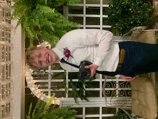

Overview
Purpose
The puropse of this site is to intrigue the people on the site and persuade them to inquire me to book them as clients. A key aspect of this is a simple and visually stunning page that showcases my abilities a a videographer, and incites a desire to know more about how to get me to shhot their wedding or weddings. I want to make it as easy as possible for prospective clients to reach out to me and inquire.
Audience
The audience will consist of brides and grooms to be, relatives of engaged people, and wedding planners looking to book for their clients. Brides and grooms will be very interested in seeing adaptability or a diverse collection of portfolio. Relatives may have a slightly lower standard, and will likely be looking for prices. Wedding planners will be looking for quality portfolio to showcase their own businesses, and also to see if I can become an ongoing help to them for their future gigs.
Branding
Website Logo

Style Guide
Color Palette
| Primary | Secondary | Accent 1 | Accent 2 |
|---|---|---|---|
| #d7a7aa | #d7a790 | #e8cdcc | #a6826c |
Typography
Heading Font: Cinzel
Paragraph Font: Lato
Normal paragraph example
Every love story is unique, and your wedding day is a chapter that deserves to be captured with authenticity and heart. We specialize in turning your most cherished moments into cinematic memories that you'll revisit for a lifetime. From the laughter to the quiet, tender glances, our films reflect the true essence of your day, so you can relive the magic every time you press play. Let us tell your story in a way that feels as timeless as your love.
Colored paragraph example
Every love story is unique, and your wedding day is a chapter that deserves to be captured with authenticity and heart. We specialize in turning your most cherished moments into cinematic memories that you'll revisit for a lifetime. From the laughter to the quiet, tender glances, our films reflect the true essence of your day, so you can relive the magic every time you press play. Let us tell your story in a way that feels as timeless as your love
Navigation
Site Map
Content
Home page
The main page will be the most important page of my website, and will contain the most content. The main reason why people will come to my site is first and foremost to see my portfolio and decide based on that and my prices whether or not they would like me to shoot the wedding that they are trying to get coverage of. This could be from the perspective of a future bride and/or groom, a relative of a bride or groom, or a wedding planning agency. Each one of these people will be most interested in the quality of my services. For this project, I will be sticking to high-quality images from my videos, but I can replace these with videos later. The portfolio is the most important aspect of my website, as it needs to show the value of my services clearly. Display of the website is very important to me and will have a strong impact on how the guests feel about me as a videographer and the business that I run. Because I am a videographer, specifically for weddings, I need to show that I am a strong artist, and this will be displayed in my portfolio and through the website’s overall design. The site needs to be a visual masterpiece that flows smoothly from one element to the next, with fonts that are elegant and romantic, colors that are lovely and radiate elegance, and even statements that make users feel understood. An example is a larger print statement such as “Capturing love, crafting memories.” People visiting my site will likely ask, “How much will this cost, and where is this team willing to work? How does travel affect the price?” With this in mind, it is essential that pricing and location information are easy to find but positioned after several images displaying my work. I believe simplicity and ease of use are essential to any website. With this in mind, it is important that the website covers four main purposes/functions to maintain simplicity. First is to see my portfolio, which will be easy as it will be all over my home page. Second is to see prices and locations of where I offer my services and how location affects the price. Third is to give users an understanding of me as a videographer—my background, experience, and easy-going but professional nature before making it to the Meet the Team page. In summation, this page will contain a lot of portfolio, lots of artistic expression, prices, and travel fees and policies, and Clever sentences and quotes to help “hook” the audience.
Images for the Home page


Meet the Team
This page will not only contain a biography and picture of me, but also even more portfolio imagery of my work. Visitors to my site will likely ask questions such as, “Is this team going to make my wedding day easy-going?” or “How much experience does this team have?” For now, this project will only include an introduction to myself. I aim to give users an understanding of me as a videographer, my background and experience, and my easy-going yet professional nature. This connection is vital, as it provides insight into who I am, allowing potential clients to feel confident that I can capture their most meaningful moments. The information will be presented in a way that radiates warmth and professionalism, helping visitors decide if I’m the right fit for their special day. In summation, this page will contain a picture of me, a biography for me explaining my credentials and experience in the field, and further portfolio building off of the first page.
Images for Meet the Team

Contact Us
This page will be the most simple page of the site. It is important that contacting me is an easy experience for guests visiting my site. I want it to be simple and straightforward for users to get in touch with me through several different methods, such as social media links displayed on the “Contact Us” page and at the footer of the website, along with an official inquiry form they can submit on that same page. The goal is for visitors to quickly learn about my services and connect with me effortlessly, creating a positive and inviting experience. In summation, this page will contain a very small amount of portfolio, but will primarily have a simple form for the user to fill out which gives them the opportunity to give me their contact info, the date of the marriage, questions that they may have, and what is most important to them with regard to the wedding.
Images for Contact Us


Wireframes
Create three wireframes for your site. One for each page and list them here
Home
Meet the Team

Contact Us